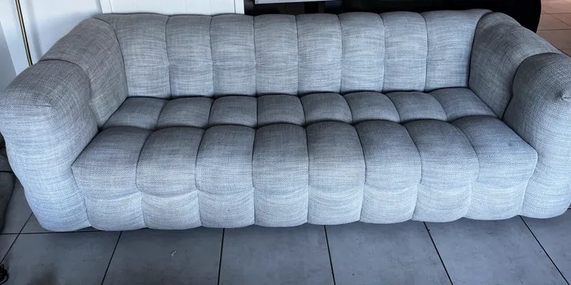
Services · Nettoyage de canapé
Nettoyage de canapé à domicile à Toulouse
Tissu, microfibre, velours, lin ou cuir : votre canapé est nettoyé en profondeur chez vous. Vous envoyez une photo, vous recevez un prix fixe, nous venons sous 48 h.
Canapé 2 ou 3 places : 69 € · Canapé 4 ou 5 places ou d'angle : 79 € · Fauteuil : 25 €
Avant / après
Nos résultats sur des canapés
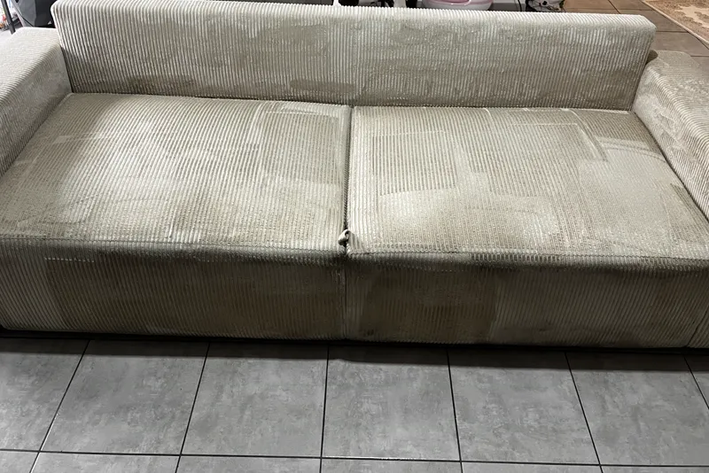
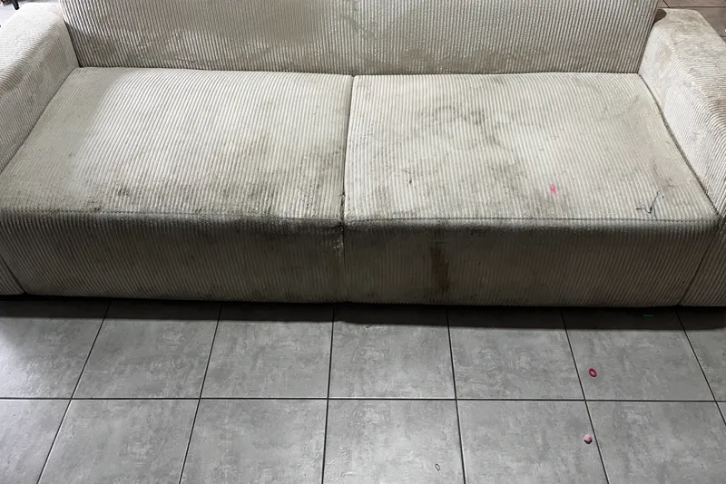
Avant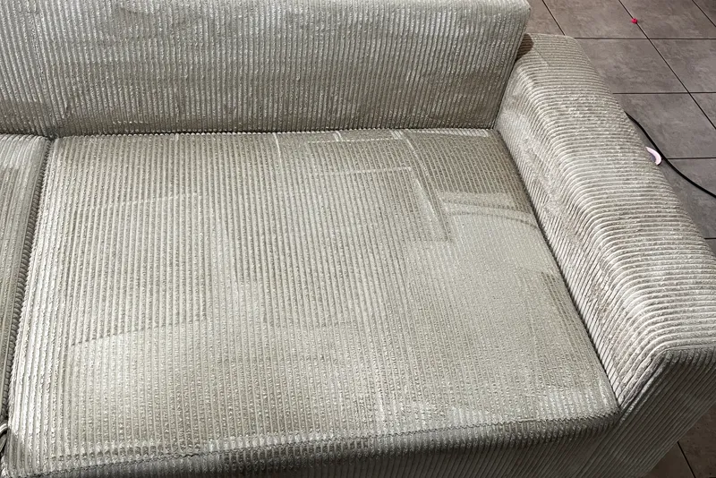
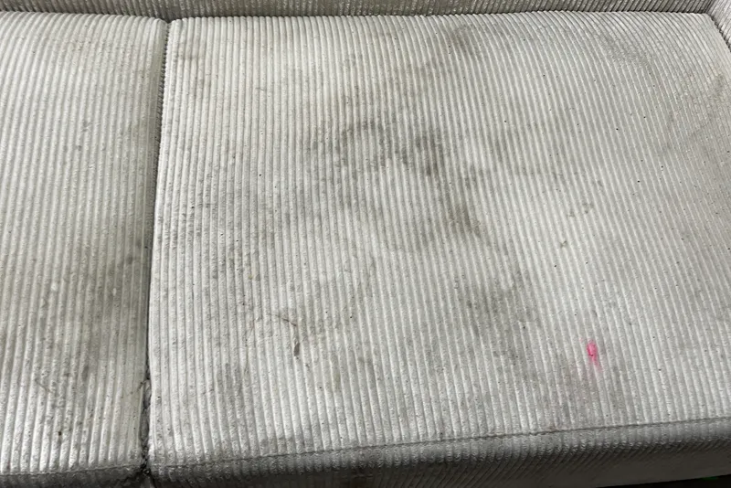
Avant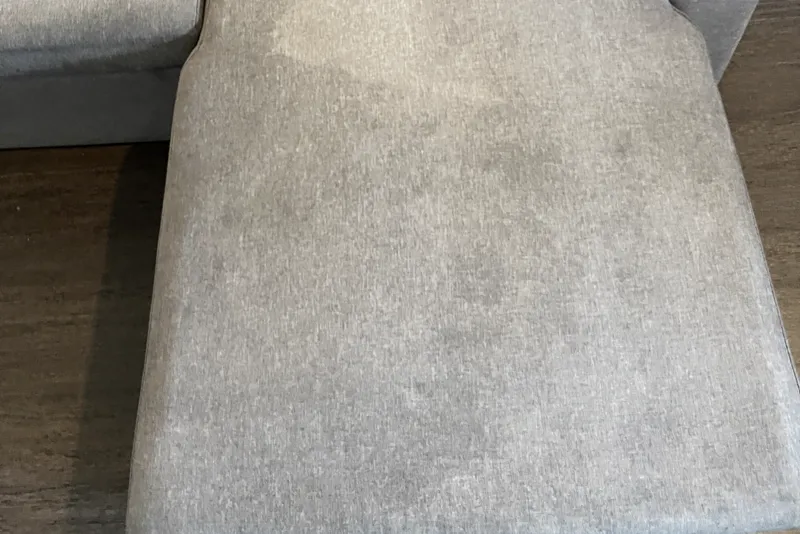
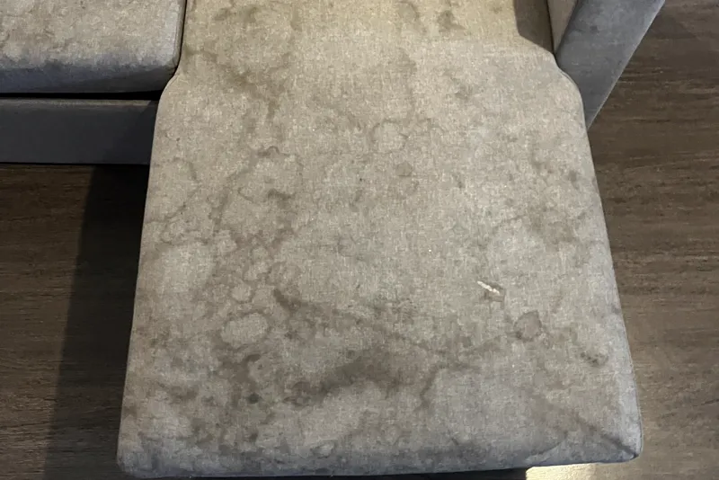
Avant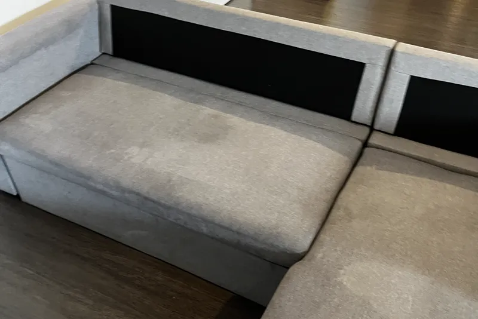
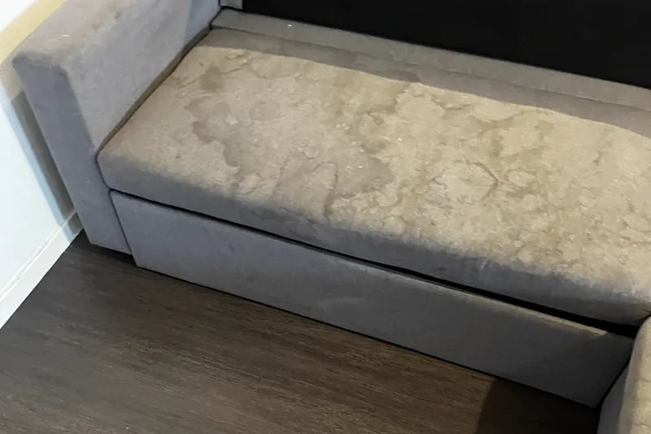
Avant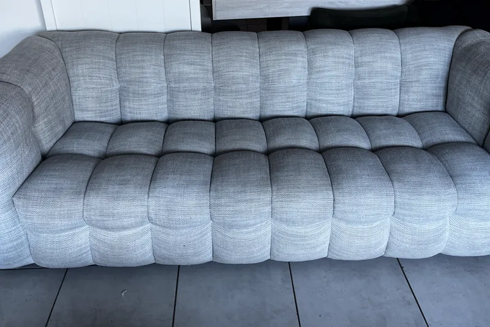
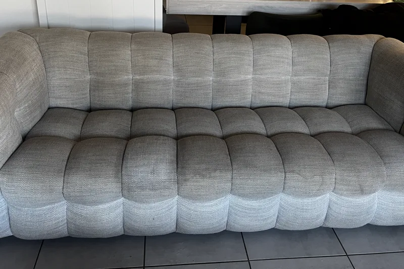
Avant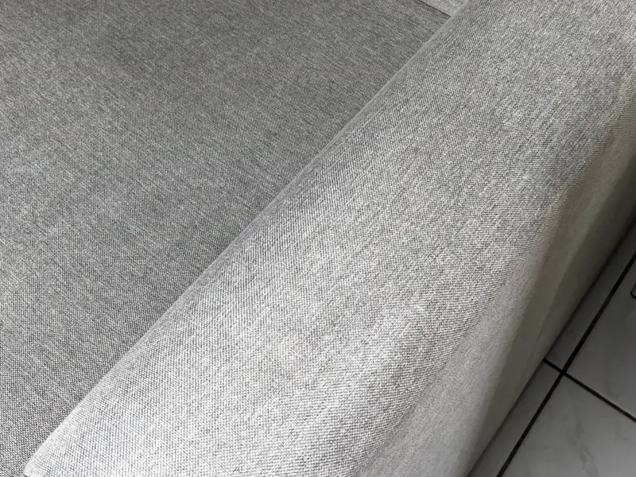
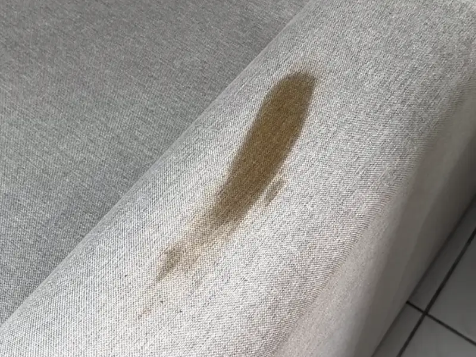
Avant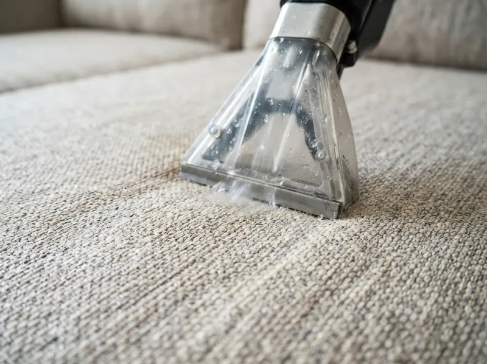
Pourquoi un nettoyage professionnel
Un canapé en tissu accumule au fil des mois poussière, sueur, traces de boisson et odeurs. Un coup d'aspirateur ne touche que la surface : la saleté reste dans la mousse et dans la fibre.
L'injection-extraction injecte de l'eau et un produit adapté au textile au cœur de la fibre, puis aspire immédiatement le tout avec la saleté dissoute. Le canapé est nettoyé en profondeur, sans être détrempé.
Comment nous nettoyons
Notre méthode, matière par matière
Avant tout, nous regardons la matière, nous aspirons le canapé et nous faisons un test discret. Choisissez votre matière pour voir les étapes.
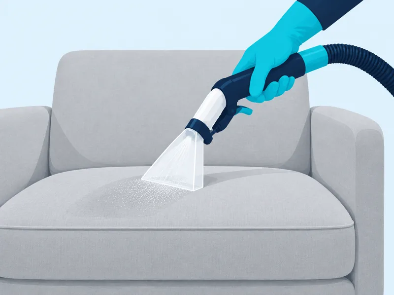
1Injection
Nous répartissons sur le tissu une solution choisie pour ses fibres. L'eau est dosée pour ne pas tremper la mousse.
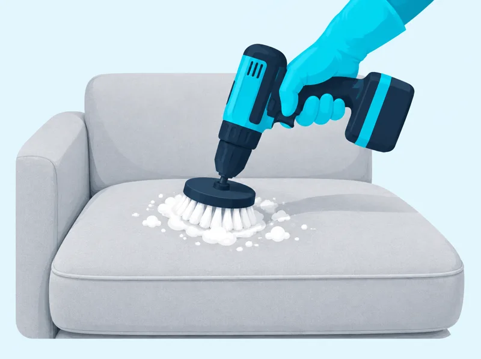
2Brossage
Une brosse souple sur perceuse travaille les taches et les zones de contact, à vitesse réglée, sans agresser le tissu.
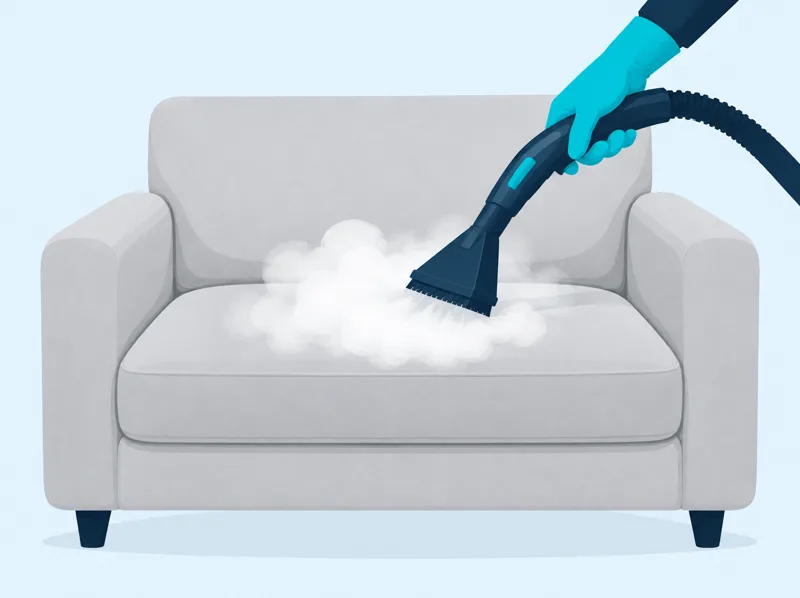
3Vapeur
Si les fibres et les colles le supportent, un passage de vapeur ciblé complète le nettoyage. Sinon, nous la laissons de côté.
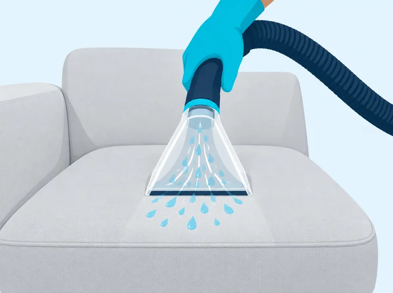
4Extraction
La machine aspire l'eau chargée de saleté. Quelques passages à sec enlèvent l'humidité en trop et préparent le séchage.
-
1
Injection
Nous avançons zone par zone pour garder la main sur la quantité d'eau, avec un produit dosé selon la réaction de la fibre.
-
2
Brossage
La brosse souple insiste sur les accoudoirs, les assises et les endroits les plus touchés, avec une pression légère.
-
3
Vapeur
La vapeur vient en plus, seulement après avoir contrôlé le tissu, les colles et les assemblages.
-
4
Extraction
L'aspiration retire l'eau et les résidus, puis les fibres sont remises en place pour un aspect régulier.
-
1
Injection
Le velours passe à la machine seulement si le tissu et son support le permettent. Sinon, le travail se fait à la main.
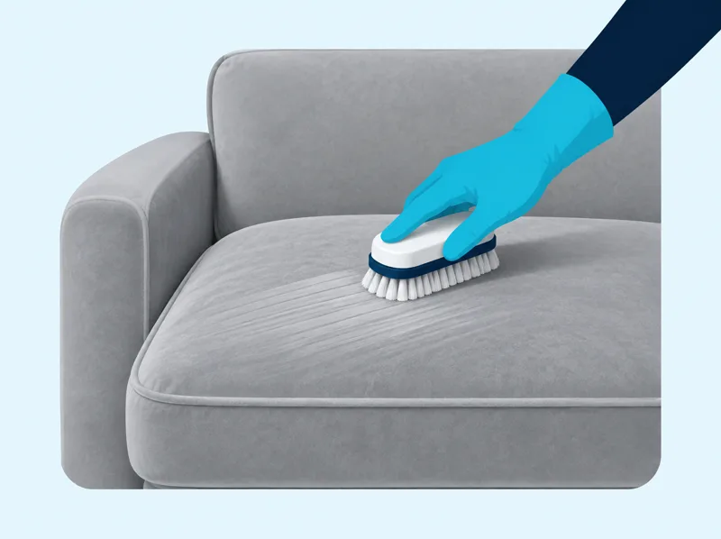
2Brossage
Le brossage reste à la main, avec une brosse souple, toujours dans le sens du poil.
-
3
Vapeur
Nous l'utilisons uniquement si le velours et les colles la supportent. Sinon, nous passons cette étape.
-
4
Extraction
L'humidité est retirée, le poil est replacé, puis nous regardons le canapé sous plusieurs angles pour repérer les traces.
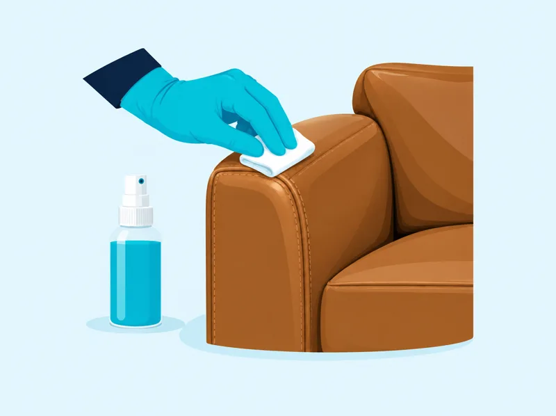
1Examen et test
Nous regardons la finition, les plis et les zones fragiles, puis nous testons le produit sur un endroit discret.
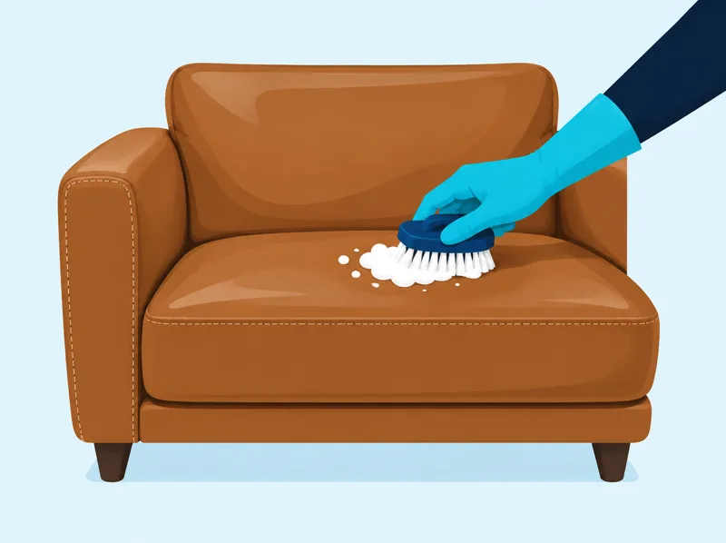
2Nettoyage à la main
Produit adapté, brosse souple et microfibres, par petites zones. Ni machine à injection, ni vapeur, et jamais trop de liquide.
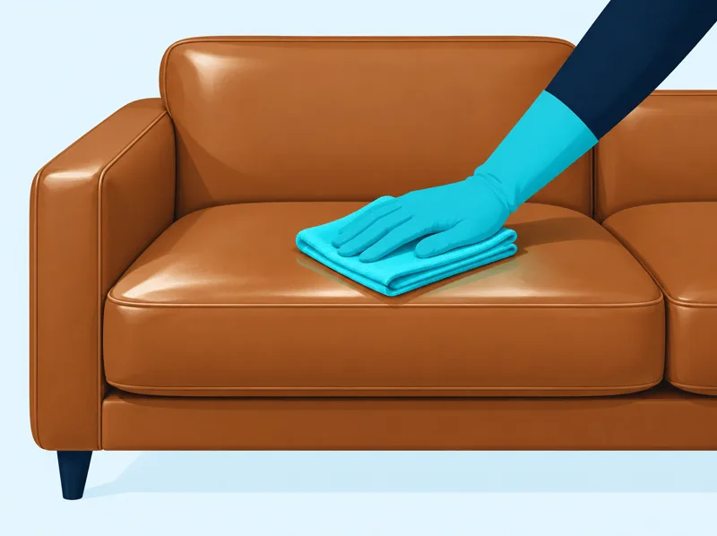
3Essuyage et conseils
Nous essuyons les résidus et contrôlons le rendu. Un soin est posé seulement si le cuir en a besoin, et vous repartez avec nos conseils d'entretien.
Un travail soigné et un avis franc : nous ne garantissons pas la disparition de toutes les taches. Certaines taches anciennes ou certaines teintures peuvent rester atténuées, et un nettoyage ne répare ni l'usure, ni une brûlure, ni une décoloration.
Images d'illustration créées par IA : elles montrent le geste, pas un résultat.
Ce qui est compris
- Assise, dossier, accoudoirs et coussins
- Détachage des taches et auréoles
- Nettoyage en profondeur adapté à la matière
- Nettoyage à la vapeur quand la matière le permet
- Séchage en quelques heures
Tarifs
- Canapé 2 ou 3 placesAssise, dossier, accoudoirs et coussins. Tissu ou cuir.69 €
- Canapé 4 ou 5 places ou d'angleMéridienne comprise. Tissu ou cuir.79 €
- FauteuilFauteuil de salon, chaise en tissu, tête de lit.25 €
Devis sur photo : le prix total vous est annoncé avant l'intervention.
Dès deux prestations dans la même intervention, −15 % sur le total : voir la remise.
Comment ça se passe
- 1
Vous envoyez une photo
Sur WhatsApp ou par téléphone. On vous rappelle rapidement avec un prix fixe.
- 2
On fixe un créneau
Généralement sous 48 h, tous les jours sauf le vendredi, de 7 h à 22 h 30.
- 3
Nettoyage sur place
Chez vous ou là où est garé le véhicule. Il suffit d'une prise électrique.
- 4
Vous réglez
Vous réglez après l'intervention.
Questions fréquentes
Combien de temps faut-il pour que le canapé sèche ?
Quelques heures. L'extraction retire la majeure partie de l'eau ; une pièce aérée accélère encore le séchage.
Faut-il déplacer le canapé ?
Non. Nous intervenons dans la pièce où il se trouve. Il nous faut seulement une prise électrique à proximité.
Les vieilles taches partent-elles ?
La plupart, oui : boissons, sueur, auréoles, poussière incrustée. Certaines teintures (encre, colorant) peuvent laisser une marque atténuée. Envoyez une photo, nous vous disons franchement ce qu'il est possible d'obtenir.
Et les canapés en cuir ?
Oui, nous nettoyons aussi les canapés en cuir, au même prix que les canapés en tissu.
Zone d'intervention
Nous intervenons à Toulouse (tous quartiers) et dans les communes proches : Blagnac, Colomiers, Tournefeuille, Cugnaux, Portet-sur-Garonne et Muret. Le déplacement est gratuit dans cette zone et jusqu'à 10 km autour. De 10 à 20 km autour, il est facturé et annoncé dans le devis sur photo. Au-delà de 20 km, nous n'intervenons pas. Voir la zone d'intervention.
Nos autres prestations
Envoyez une photo, on vous rappelle rapidement
Envoyez une photo de votre canapé, matelas, tapis ou véhicule sur WhatsApp : vous recevez le tarif exact avant toute intervention.